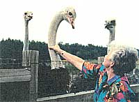
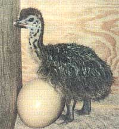
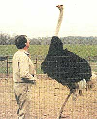
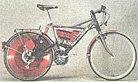

In 1986, Herb and Carolyn Fisher bought seven pairs of yearling ostriches. The seven-foot, 250-pound birds tower over their owners and may outlive them-their life span is more than 70 years. Two of the seven hens laid eggs in their second year. (Each lays 30 to 50 eggs per year, weighing about four pounds apiece.) Today, about 100 giant birds wander 12 acres at the Fisher ranch in Stanfield, North Carolina.
The Fishers got into the ostrich business "on the ground floor," as Mrs. Fisher says-in 1986, a highly profitable time to get into it. They bought breeders and sold chicks. "It was just really new and people just kept saying `this is a great investment.'"
In 1993-94 three-month-old chicks sold for $8,000 a pair. Birds had been scarce due to the U.S. antiapartheid embargo on goods from South Africa, where they have been raised commercially for over 100 years. Once the embargo was lifted, eggs were allowed in and hatched under quarantine. Now there are more and more birds and the price has gone down. Breeders that were going for $50,000 a pair now go for $8,000-$10,000 a pair.
Despite the drop in prices, the American ostrich market is at a significant turning point. Just in the last year, it has finally become big enough in the U.S. to transform from a breeder market to a slaughter market. As ostrich becomes a viable commercial market, the demand for the product is likely to increase.
Carolyn Fisher believes "you can still make a lot more money raising ostriches than horses or cattle. You get $600-$750 per bird, and you get more offspring per year. The price of beef has really been down and ostriches have really taken off in the cattle states like Oklahoma and Texas because these guys weren't making any money."
Raising ostriches requires less acreage than other livestock, and relatively modest amounts of food and water (they eat manufactured pellets, or graze on grass just like cattle). A beef animal's feed-tomass conversion is five to one, meaning the animal must consume five pounds of feed to put on one pound of mass. Ostriches have a feed-to-mass ratio closer to two to one. Economically, that means a considerably higher proportionate return for the feed invested in ostriches than that invested in beef animals. The American Ostrich Association (AOA) says most ostriches go to slaughter at 10-14 months of age and produce about 70 pounds of meat, 14 square feet of leather, and 2 pounds of feathers. The U.S. continues to import ostrich feathers because sorting, cleaning, and dyeing them is so labor-intensive, but there is a domestic market for leather, which is used to make western boots, shoes, and wallets. Ostriches are highly adaptable to varied climates. However, according to a 1995 survey, over half the ostriches in the U.S. reside in Texas, California, Arizona, and Oklahoma.
Ostrich meat, once served only in South Africa has long been served in restaurants in Europe, and since the advent of mad cow disease, ostrich has become a very popular alternative to beef in England. Ostrich meat has been served in restaurants in the United States since 1992.
Marketed as a healthy but satisfying alternative to beef for the health- or environment-conscious consumer, the color, flavor, and texture of ostrich meat is similar to beef's, with two-thirds less fat. The cholesterol level is similar to beef and poultry. You can buy ostrich meat for $3 a pound in supermarkets and pay up to $40 an entree in some restaurants.
The investment for successful ostrich farming can be substantial and the payoff in a changing market is not guaranteed. As the availability and price of ostrich comes down, speculators are abandoning the industry, and the AOA predicts there will be a considerable consolidation of production in the next few years as many small operators leave the industry and those remaining increase in size. Chuck Ball, executive director of the AOA, recently chastised those who promote the industry as a way to get rich quick. In the July issue of the association magazine, he writes, "Not long ago, exaggeration and hype permeated the ostrich industry as promoters oversold the advantages of investment in the fledgling business. Much of this hype was accepted as fact, and is still perpetuated by well-meaning people trying to promote the industry."
The AOA recommends people consider getting involved in ostriches as a way of diversifying their sources of income, rather than putting all their (fourpound) eggs in one basket.
If you're not ready to become an ostrich rancher, the AOA suggests you invest in several ostrich eggs, young chicks, or older birds and place them in the care of an experienced ostrich breeder-rancher.
The industry still has the potential to be volatile, but in 10 years it has gone from an oddity to a small commercial market. Will ostriches get picked up by companies like Perdue, or will they remain a small farmer's specialty?
"It's been an interesting business to be in because it's changed so much, and it's something different" Mrs. Fisher says. "Most people in the business are extroverts-they're the type who are attracted to something different."
For information about raising ostriches, or to find the ostrich association nearest you, contact the American Ostrich Association, 3950 Fossil Creek Boulevard, Suite 200, Fort Worth TX 76137. Phone: (817) 232-1200.
When MOTHER tried to get Swiss inventor Michael Kutter to explain how his Velocity solar electric bicycle works, his answer was: "You have to ride it."
When we took it for a spin, we understood. It feels like this:
We are pedaling the nicer-than-we've mountain bike just as if it were a normal bike. Nothing is unusual, except it's not our old falling-apart Schwinn Hollywood Deluxe one-speed with coaster brakes. It's just a nice bike. That's a pleasure by itself, so we start to pedal faster. Suddenly, a little kick makes us start to pedal even faster. It's not really a mechanical kick; there's no engine noise. It just feels like all that spinach we've been eating just paid off. Suddenly we are pedaling pretty fast uphill and not feeling the hill. We feel somewhat godlike, moving faster with less effort, and very, very happy with the wind in our hair.
It works like this: The rear wheel of Velocity is equipped with an electric motor and a continuously variable transmission. The bicycle literally "feels," by means of electronic sensors, exactly what you are doing with the pedals. "It supports you by enforcing your own actions," says Kutter. That's why the machine's assistance seems so subtle, so natural, you are unaware you are being assisted. Cruising speed for your average slightly-out-of-shape cyclist is 35km/h (22 mph). The motor runs on solar electric or standard electric batteries stored in a case in the triangular space above the pedals. The batteries last through two hours of pedaling before they need to be recharged, and recharging takes two hours. You can recharge on the road, as the battery case opens up easily.
So, where can you get one? If you're a millionaire you can import yours from Kutter in Basel, Switzerland, for around $4,000 (Michael Kutter, Burgweg 15, CH-1058 Basel). But, then again, you could wait until the struggling inventor gets a company to manufacture and distribute his invention for him, and watch the price fall dramatically into the acceptable range. MOTHER is counting on retiring the Schwinn the day Kutter calls with the news, which may be sooner than later. He is rumored to have been spotted carrying a bag of Basel's famous almond spice cookies and an electric bicycle to a meeting in Los Angeles. He was hush-hush, but we know he'll find a distributor. Who could resist a product that makes humans act like gods?
|
 Carolyn Fisher and friends. |
 A two-day-old. |
 Herb Fisher and Hoss. |
|
 |
|
|